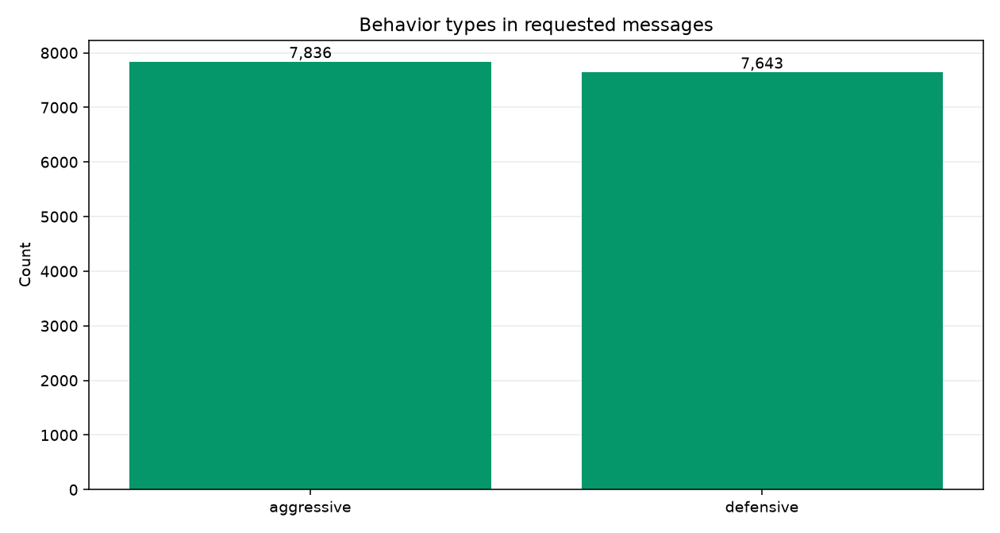
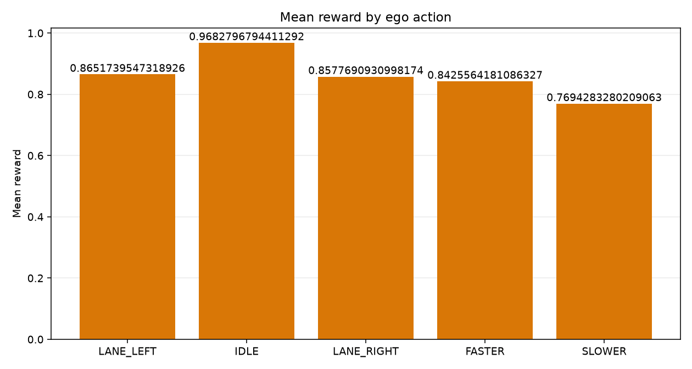

Intent-Aware Dataset Dashboard
Source: data/intent_aware_dataset.jsonl
Records
11,505
Mean reward
0.883
Scenario crashes
0
0.00%
Scenario truncations
632
5.49%
Episodes represented
100
Actual rollout episodes
100
Actual rollout steps
2,000
Actual rollout crashes
0
Actual crash rate
0.00%
Actual truncations
100
No scenario crashes were recorded. Scenario metrics are counterfactual one-step outcomes. Actual rollout metrics are shown only when supplied on the command line.
How the dataset was created
1. ResetStart an episode with randomized lanes, vehicle types, and traffic offsets.
→
2. ObserveFind neighbors within 60 m in the ego and adjacent lanes, up to 8 slots.
→
3. RequestEnumerate message subsets from one requested vehicle through all visible vehicles.
→
4. Preview intentUse each requested neighbor's copied-scene next action as its message.
→
5. Choose actionApply the rule to select left, idle, right, faster, or slower.
→
6. RecordStep a copied environment and save state, messages, action, next state, reward, and flags.
Real rollout branch: after all counterfactual scenarios are evaluated, the real environment advances once using the action selected with all currently visible messages.




Action statistics
| Action | Count | Share | Mean reward |
|---|---|---|---|
| LANE_LEFT | 197 | 1.71% | 0.865 |
| IDLE | 5,439 | 47.28% | 0.968 |
| LANE_RIGHT | 107 | 0.93% | 0.858 |
| FASTER | 2,716 | 23.61% | 0.843 |
| SLOWER | 3,046 | 26.48% | 0.769 |
Request statistics
| Messages requested | Scenarios | Share |
|---|---|---|
| 0 | 2,000 | 17.38% |
| 1 | 4,686 | 40.73% |
| 2 | 3,713 | 32.27% |
| 3 | 1,057 | 9.19% |
| 4 | 49 | 0.43% |